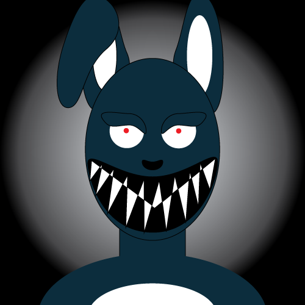

His name is Whip the bunny and he’s a tall thin creepy bunny who loves to laugh Tall and slender, he’s a menacing presence that lurks in the forest's shadows. His crimson, beeping eyes, which seem to pierce the minds of those who dare enter his domain. He has an unpleasant appearance due to his fur, which is a frightening shade of dirty purple-gray, matted in some places with empty patches. Despite his eerie exterior, Whip wears a fascinating dark red necklace holding a “W" that looks like a key. But to what? Either way he finds delight in playing tricks on unsuspecting wanderers, using his keen wit to manipulate their perceptions and thoughts. He’s a mysterious trickster that rules only within the area of the forest. Those who come upon him are both terrified and fascinated by this intriguing figure, like I have and created this website to prove to people who he is.
Whip possesses a remarkable transformative ability akin to a chameleon, seamlessly blending with his surroundings. With a mere thought, his fur shifts in color and texture, rendering him virtually invisible in the dense forest of the Shadowood. But his talents don't end there; Whip also possesses the power to manipulate the minds of those he encounters. Through subtle whispers and eerie illusions, he can twist perceptions and sow confusion, leaving his victims vulnerable to his dark intentions. This combination of camouflage and mental manipulation makes Whip a formidable predator in the eerie depths of the forest. Where he stalks his prey with stealth and strikes with malevolent intentions only few can escape like I have.